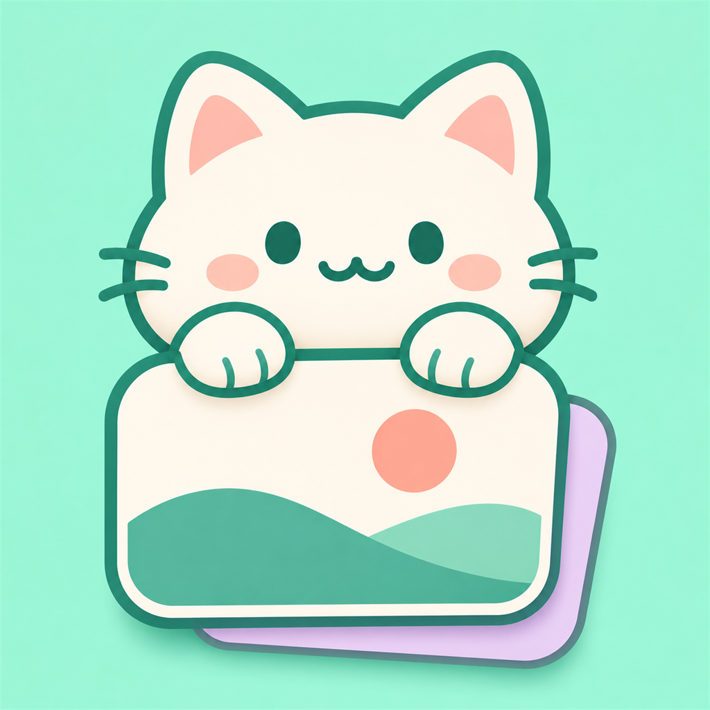

A LITTLE FELINE CHARM FOR YOUR LOCK SCREEN
Pawster喵贴
An on-device Collections wallpaper installer
for iOS. Fresh wallpapers, happy little paws.
SwiftUI + RustOn-deviceCollections .tendies

An on-device Collections wallpaper installer
for iOS. Fresh wallpapers, happy little paws.